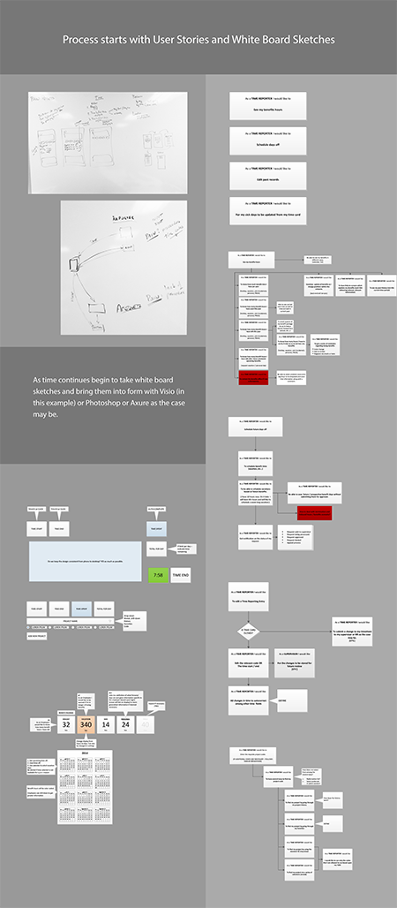
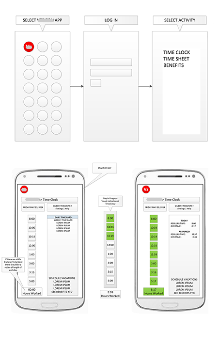
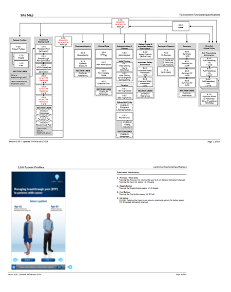
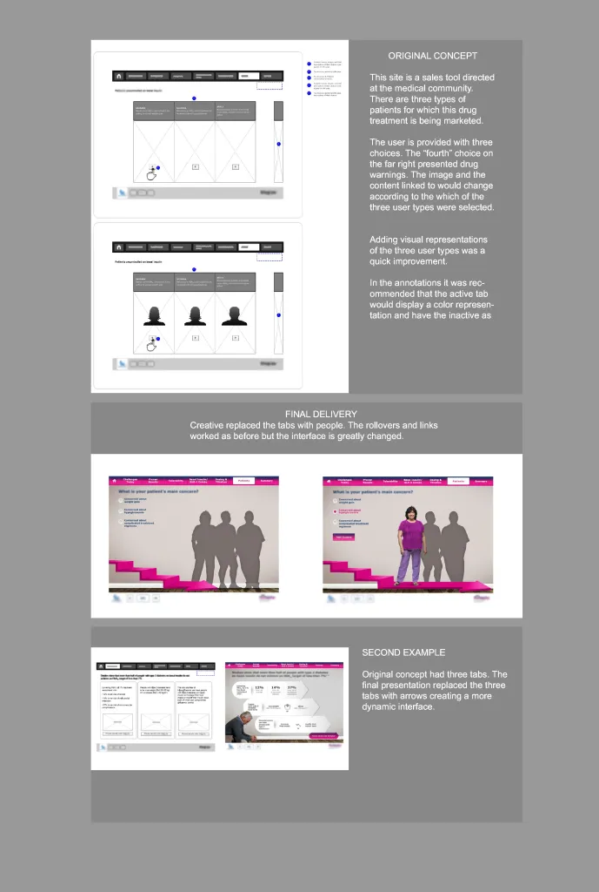
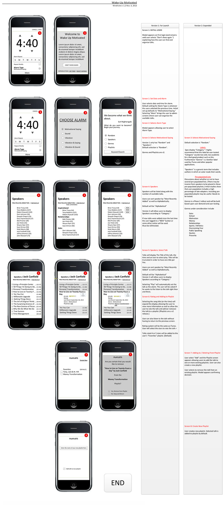
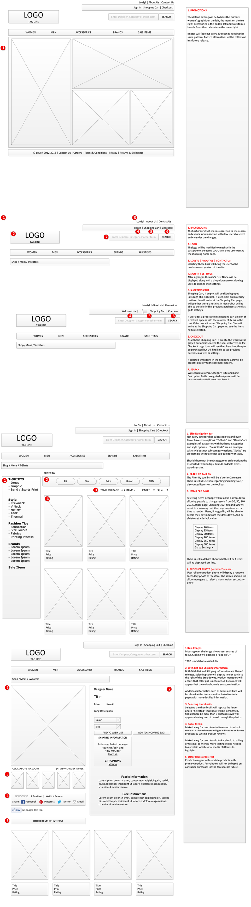

Frame the work
Clarify actors, goals, constraints, and the operational problem behind the requested interface.
Selected work · Independent consulting
Across consulting engagements, the industries and interfaces changed. The recurring work was to make the operating problem explicit, translate it into a usable structure, and document the result clearly enough for approval and production.
01 · A repeatable approach
A workforce tool demanded careful exception handling. A sales presentation needed memorable screens and clear transitions. A consumer app emphasized choice and navigation. An ecommerce site required product discovery and detailed page behavior.
Clarify actors, goals, constraints, and the operational problem behind the requested interface.
Use stories, cases, sketches, and flows to expose decisions, branches, and exceptions.
Move from whiteboard and wireframe to the level of visual detail the team actually needs.
Document screens, transitions, links, rules, and annotations so decisions survive handoff.
02 · Selected engagements
This is an overview of the consulting period rather than one artificially enlarged case study. Each project contributes a different piece of evidence about the work.


Employees tracked location and time, managers assigned and reassigned work, and supervisors reviewed performance. The design also accounted for early departures, delays, assignment transfers, roles, and skills.


Because trained staff presented the material, the central problem was not self-service simplicity. Key sales points, transitions, and screen distinctiveness mattered more—and every interface, transition, and link was documented for production.

The customer-facing experience organized choices among speakers and topics, carrying the path from alarm and setup through selection and playback.

A lifestyle storefront for thousands of fashion and accessory products required product discovery, category behavior, detailed page states, and annotations that connected the interface to its rules.
Consistency came from the reasoning—not from forcing every engagement into the same deliverable.
The consulting work used a shared discipline: understand the business situation, choose the right level of representation, and leave behind artifacts another team could act on.
What the work left behind
The strongest evidence from the consulting period is the range of artifacts and the way each one answers a different question.
Next in the chronological path: B&H—where the same ability to bridge operations, UX, and implementation was applied at enterprise scale.